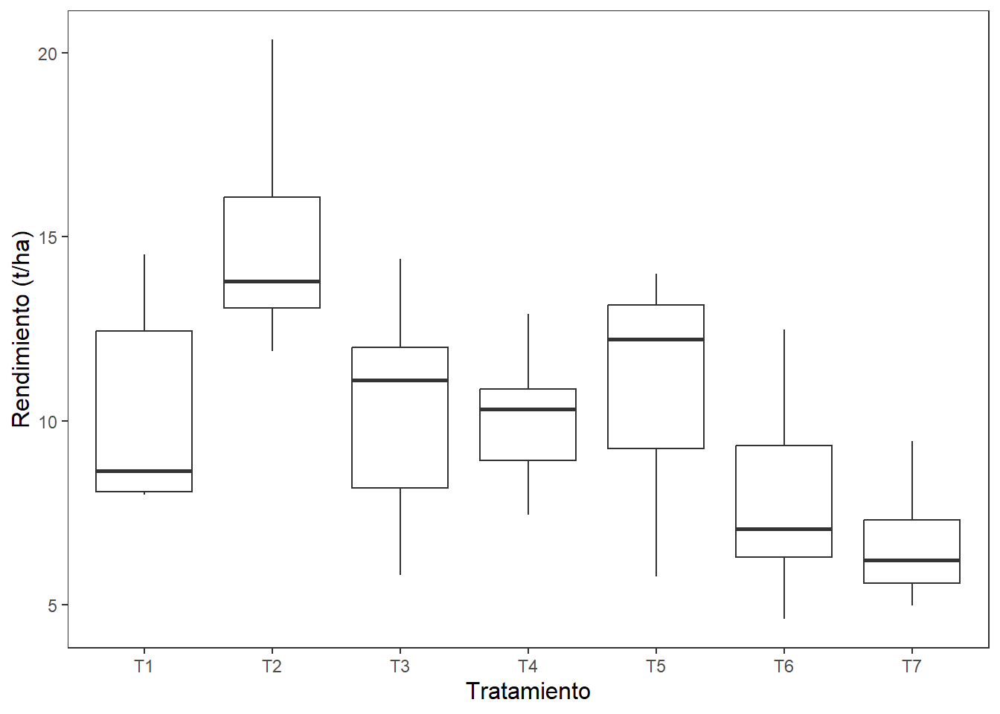

El diseño de experimentos fue inventado por Ronald A. Fisher en las décadas de 1920 y 1930 en la Estación Experimental de Rothamsted, conocida ahora como Rothamsted Research. En el primer libro de Fisher sobre diseño de experimentos mostró cómo se podían extraer conclusiones válidas a partir de experimentos con fluctuaciones naturales como la temperatura, las condiciones del suelo y la lluvia, es decir, en presencia de variables molestas o perturbadoras.
Las variables perturbadoras conocidas suelen causar sesgos sistemáticos en grupos de resultados (por ejemplo, variación entre lotes). Las variables perturbadoras desconocidas suelen causar variabilidad aleatoria en los resultados y se denominan variabilidad inherente o ruido. Aunque el método de diseño experimental se utilizó por primera vez en un contexto agrícola, el método se ha aplicado con éxito en otras industrias y ámbitos.
En la Sección 2.6 se presentaron los tipos de estudio, en esta sección se presentan los principios básicos y los principales diseños experimentales usados en agricultura. ¿Por qué es importante el diseño experimental? Supongamos que deseamos comparar dos variedades de maíz, una variedad estándar ya conocida a la que llamaremos V1 y una variadad nueva de la que recién hemos escuchado a la que llamaremos V2. Podríamos plantar la mitad de un campo con V1 y la otra mitad con V2. Se plantan las dos variedades exactamente el mismo día y se gestionan las dos mitades del campo exactamente igual durante todo el período vegetativo. A lo largo de la cosecha, se llevan registros separados del rendimiento de cada mitad del campo, de modo que al final de la temporada se obtiene el rendimiento total de cada variedad. Supongamos que, en este caso, la nueva variedad (V2) tiene un rendimiento un 20% mayor que la variedad estándar (V1). ¿Puede asegurar que la nueva variedad es mejor que la variedad estándar? La respuesta es no, porque puede haber otros factores que hayan provocado la diferencia de rendimiento, como por ejemplo:
V2 se plantó en una parte del campo que tenía mejor suelo.
Un extremo del campo era más húmedo que el otro y algunos de las plantes se infectaron con oídio.
Las diferencias de textura del suelo provocaron un aumento de la humedad del suelo de un extremo del campo al otro.
Una parte del campo con la variedad estándar recibe sombra por la tarde de una línea de árboles adyacente.
La presencia de malezas es mayor en una parte del campo con V1.
Los bosques o zonas silvestres adyacentes son una fuente de plagas que afectan más a un extremo del campo que al otro.
Como el experimento no se preparó para tener en cuenta la variabilidad del campo, no se puede concluir si el rendimiento superior de una variedad se debió a la propia variedad o a diferencias en las condiciones de cultivo. No se repitieron los tratamientos. Por lo tanto, no tiene forma de aplicar una prueba estadística a sus datos. Si piensa en su propia explotación, ¿qué otras fuentes de variación podrían influir en su pregunta de investigación?
Con el diseño experimental y el análisis estadístico adecuados, puede identificar y aislar los efectos de la variación natural y determinar si las diferencias entre tratamientos son «reales», dentro de ciertos niveles de probabilidad. La elección del diseño experimental, dependerá en gran medida de la pregunta de investigación que se plantee y del número de tratamientos del experimento.
8.1 Conceptos básicos
Unidad experimental: el objeto o espacio al cual se aplica el tratamiento y donde se analiza la variable o variables investigadas. Dependiendo del tipo de experimento la unidad experimental puede ser un animal, un árbol o una parcela. Cuando la unidad experimental es una parcela, en algunas ocsiones se presenta el efecto borde.
NotaEfecto borde
Las diferencias que se observan en el crecimiento y producción de plantas que se ubican en los perímetros de una parcela comparadas con las que se ubican en la zona central de la parcela se conocen como efecto borde, este efecto puede ser causado por:
Vecindad de las parcelas o áreas no cultivadas lo que puede producir que las plantas del perímetro tengan menor competencia de luz y nutrientes.
Competencia entre los tratamientos.
Tratamiento: el tratamiento es el procedimiento cuyo efecto se mide y que se desea comparar con otros tratamientos. Ejemplos de tratamiento pueden ser la ración alimenticia, una variedad de semillas, un programa de riego, la concentración de un herbicida o fungicida, una combinación de temperatura y humedad.
Unidad de muestreo: el efecto del tratamiento se puede medir en una fracción de la unidad experimental o en toda la unidad experimental. Es decir que la unidad de muestreo puede ser toda la unidad experimental o una fracción de la misma. Ejemplos de unidad de muestreo son: un animal sometido a una ración de alimento, muestra aleatoria de las hojas de una planta, la cosecha de 10 plantas de la unidad experimental en una parcela.
Error experimental: Medida de la variación existente entre las observaciones realizadas en las unidades experimentales tratadas en forma similar. La variación puede provenir de dos fuentes:
TipFuentes de la variación
Variabilidad propia del material experimental al que se aplican los tratamientos.
Variación resultado de cualquier falta de uniformidad en la realización física del experimento.
Repeticiones: número de veces que un tratamiento aparece en un experimento.
TipFunciones de las repeticiones
Permitir una estimación del error experimental.
Mejorar la precisión de un experimento mediante la reducción del error estándar de una media de tratamiento.
Aumentar el alcance de la inferencia del experimento mediante la selección y el uso adecuado de unidades experimentales más variables.
Controlar la varianza del error.
Aumentar el número de repeticiones, la mayoría de las veces, mejora la precisión. La elección del número de repeticiones de un experimento depende de varios factores, como el nivel de confianza deseado, la variabilidad esperada de los datos, el tamaño del efecto que se desea detectar, la disponibilidad de recursos y la complejidad del experimento; por lo general, un buen punto de partida es intentar realizar al menos tres repeticiones por condición, pero es posible que se necesiten más dependiendo de la pregunta de investigación específica y del diseño experimental.
8.2 Principios básicos
En el diseño de experimentos, el control del error experimental se refiere a la minimización de la variabilidad de los resultados que no está directamente relacionada con los factores estudiados, lo que se consigue mediante los principios como la aleatorización, la replicación y el bloqueo (control local), cuyo objetivo es aislar el verdadero efecto de las variables manipuladas y reducir la influencia de factores ajenos al resultado.
Aleatorización: La asignación aleatoria de los tratamientos a las unidades experimentales ayuda a distribuir por igual cualquier fuente desconocida de variación entre los grupos de tratamiento, reduciendo el sesgo.
Repetición: La repetición de cada condición de tratamiento varias veces en diferentes unidades experimentales permite estimar el error experimental y aumenta la precisión de los resultados.
Bloqueo (control local): Agrupar unidades experimentales similares en bloques y asignar tratamientos dentro de cada bloque ayuda a controlar las fuentes conocidas de variación que podrían afectar a los resultados, como las diferencias en las condiciones ambientales.
8.3 Análisis de Varianza (ANOVA, ANDEVA)
El Análisis DeVarianza o prueba ANOVA (abreviatura de Analysis of Variance) es una técnica que se utiliza para comparar las medias de más de dos grupos. Las comparaciones se hacen analizando la variabilidad dentro y entre los grupos. Como toda prueba de hipótesis tiene una hipótesis nula (\(H_0\)), en este caso, para los \(k\) grupos o poblaciones la hipótesis nula es que las medias de todos los grupos o poblaciones son iguales; mientras que la hipótesis alternativa es que al menos una de las medias es diferente:
Vamos a suponer que deseamos comparar \(k\) tratamientos o niveles para un \(único factor\), cada tratamiento o nivel tiene \(r\) repeticiones. La respuesta observada es una variable aleatoria. Los datos del modelo se pueden presentar de la siguiente forma:
Tabla 8.1: Datos de un experimento de un factor único
Trat.-Nivel
Repetición 1
Repetición 2
\(\ldots\)
Repetición \(r\)
1
\(y_{11}\)
\(y_{12}\)
\(\ldots\)
\(y_{1r}\)
2
\(y_{21}\)
\(y_{22}\)
\(\ldots\)
\(y_{2r}\)
\(\vdots\)
\(\vdots\)
\(\vdots\)
\(\ldots\)
\(\vdots\)
\(k\)
\(y_{k1}\)
\(y_{k2}\)
\(\ldots\)
\(y_{kr}\)
El modelo matemático correspondiente puede ser escrito como:
donde \(y_{ij}\) corresponde a la \(j-ésima\) repetición para el \(i-ésimo\) nivel o tratamiento, \(\mu_i\) es la media del \(i-ésimo\) nivel o tratamiento y \(\epsilon_{ij}\) es un componente de error aleatorio que incorpora las otras fuentes de variabilidad en el experimento. Se supone además que los errores tienen media 0. La Ecuación 8.1 recibe el nombre de modelo de medias.
Si definimos \(\mu_i=\mu+\alpha_i\), la Ecuación 8.1 queda escrita de la forma:
En la Ecuación 8.2 llamada comúnmente el modelo de efectos, el término \(\mu\) es un parámetro para todos los tratamientos y se conoce como la media general y \(\alpha_i\) es el efecto del tratamiento (nivel) \(i\).
Los \(k\) tratamientos fueron escogidos por el experimentador.
Los \(k\) tratamientos fueron tomados de una muestra aleatoria de muchos tratamientos.
En el primer caso, se puede probar la hipótesis sobre las medias de los tratamientos, y las conclusiones solo aplicarán a los niveles o tratamientos escogidos en el análisis. No se puede extender las conclusiones a tratamientos parecidos. Además es posible calcular los parámetros \(\mu\), \(\alpha_i\) y \(\sigma^2\). Este modelo se llama modelo de efectos fijos.
En el segundo caso las conclusiones que se basan en la muestra de tratamientos, se pueden extender a todos los tratamientos. En este caso los \(\alpha_i\) son variables aleatorias. Por lo que conocer sus valores exactos no es necesariamente importante. Por otro lado, se pueden verificar hipótesis sobre la variabilidad de \(\alpha_i\) y estimar el valor de esta variabilidad. Este modelo se llama modelo de efectos aleatorios o modelo de componentes de la varianza.
8.3.2 Tabla ANOVA
Sea \(\bar{y}\) la media general, o media de todos los datos, y \(\bar{y_i}\) la media por el grupo \(i-ésimo\). La suma cuadrática total está dada por
El primer término es la suma de los cuadrados del error (SCE). La suma \(\sum_j{(y_{ij}-\bar{y}_I)}^2\), mide la variación dentro del i-ésimo grupo. La suma de los cuadrados del error es entonces una medida de la variabilidad dentro de los grupos. El segundo término en la Ecuación 8.4 es llamada la suma cuadrática de los tratamientos (SCTr). La SCTr compara la media para cada grupo, \(\bar{y}_i\), con la media general. Esta mide la variabilidad entre las medias de las muestras. La Ecuación 8.4 se puede reescribir como
\[
SCT = SCE + SCTr
\tag{8.5}\]
Si los datos provienen de una media común, esperaríamos que SCE y SCT sean aproximadamente iguales. Por otro lado si SCE y SCT son muy distintas, tendríamos evidencia contra la hipótesis nula. ¿Cómo podríamos decir si las diferencias se deben a que la hipótesis nula es falsa o unicámente a la variación muestral? El estadístico usado en este caso es:
\[
F = \dfrac{\frac{SCTr}{k-1}}{\frac{SCE}{n-k}}
\tag{8.6}\]
Para obtener una escala adecuada, cada término se divide por sus respectivos grados de libertad, obteniendo la suma media de los cuadrado de los tratamientos o los errores (MCTr o MCE). \[
MCTr=\frac{SCTr}{k-1}
\]
\[
MCE = \frac{SCE}{n-k}
\] Los grados de libertad para SCT son \(n-1\), para \(SCE\) los grados de libertad son \(n-k\). Usando Ecuación 8.5 para los grados de libertad: \(gl(Total)=gl(Error)+gl(Tratamiento)\) y reemplazando los grados de libertad totales y del error se obtiene que los grados de libertad de los tratamientos son \(k-1\). El procedimiento de la prueba se resume en la Tabla ANOVA que se muestra en la Tabla 8.2
Tabla 8.2: Tabla del Análisis de Varianza para el modelo de un único factor
El diseño experimental más sencillo es un diseño completamente al azar. Este funciona mejor en situaciones muy controladas y condiciones muy uniformes. Por este motivo, el diseño completamente al azar no se suele utilizar en experimentos de campo. Puede utilizarlo si trabaja en un campo muy uniforme, en un invernadero o en una cámara de crecimiento, o si no tiene idea de las condiciones de cultivo. de crecimiento, o de la variabilidad de su campo.
El modelo matemático para los datos provenientes de un diseño completo al azar, con un número diferente de repeticiones para cada nivel del factor puede ser escrito como;
\[
y_{ij} = \mu +\alpha_i + \epsilon_{ij}
\]
La tabla ANOVA correspondiente a este modelo es la mostrada en Tabla 8.2.
En el Ejercicio 3.11, se presentó el proyecto de graduación de Alfredo Aguilar y José C. Flores, a modo de ejemplo vamos a analizar los datos correspondientes a la última medición para verificar la existencia de diferencias significativas para la altura entre los tratamientos. Para esto inicialmente se va a crear la variable DDS que era una de las actividades que se debía realizar en el ejercicio mencionado, posteriormente se filtrarán los datos para quedarnos unicámente con las observaciones donde la variable DDS sea igual a 56.
library(tidyverse)
── Attaching core tidyverse packages ──────────────────────── tidyverse 2.0.0 ──
✔ dplyr 1.1.4 ✔ readr 2.1.6
✔ forcats 1.0.1 ✔ stringr 1.6.0
✔ ggplot2 4.0.1 ✔ tibble 3.3.0
✔ lubridate 1.9.4 ✔ tidyr 1.3.2
✔ purrr 1.2.0
── Conflicts ────────────────────────────────────────── tidyverse_conflicts() ──
✖ dplyr::filter() masks stats::filter()
✖ dplyr::lag() masks stats::lag()
ℹ Use the conflicted package (<http://conflicted.r-lib.org/>) to force all conflicts to become errors
Finalmente vamos a hacer la prueba ANOVA con la función aov(), la forma de usar la función es: aov(formula, data). El resultado lo guardamos en una variable y para ver los resultados se usa la función summary().
mod1 <-aov(Altura ~ Tratamiento, data = dds56)summary(mod1)
Df Sum Sq Mean Sq F value Pr(>F)
Tratamiento 6 3965 660.8 1.257 0.284
Residuals 98 51518 525.7
Se observa que \(SCTr \; (3965) < SCE \; (51518)\), esto sugiere que la mayor parte de la variabilidad en la altura no se explica por los tratamientos. El valor \(p\) de la prueba ANOVA es 0.2844 que es mayor a la siginificancia de \(0.05\).
Importante
Comparamos el valor \(p\) contra la \(\alpha = 0.05\) por convención y porque funciona muy bien como equilibrio. Siempre es recomendable preguntarse:
¿Qué es más grave en este contexto: rechazar una hipótesis verdadera o no detectar una diferencia real?
Como dato histórico. Ronald Fisher, uno de los padres de la estadística moderna, propuso \(0.05\) como un umbral práctico.
De acuerdo con el valor \(p\), se concluye que no hay evidencia suficiente para afirmar que los tratamientos afectan signficativamente la altura. Las diferencias observadas entre tratamientos podrían explicarse por variabilidad aleatoria.
Ahora vamos a trabajar con datos del mismo proyecto, pero del rendimiento en toneladas por hectárea de cada tratamiento. En la hoja rendimiento_ha del archivo rend_24004.xlsx se encuentran los datos, las variables presentes en el archivo son:
Tratamiento: tratamiento al que se sometió la parcela.
Parcela: número de parcela
peso_promedio: peso de las mazorcas en gramos.
plantas_hectarea: número de plantas estimadas por hectárea.
Rendimiento_ha: rendimiento en toneladas por hectárea (t/ha)
Primero, cargamos los datos. Se resumen los datos, este resumen se presenta en la Tabla 8.3. Además se crea un diagrama de cajas, dicho diagrama se presenta en la Figura 8.1. De acuerdo a lo que se observa en la tabla y en la figura, el tratamiento T2 tiene el mayor rendimiento promedio mientras que T6 y T7 tienen medias menores al resto de los tratamientos.
Tabla 8.3: Estadística descriptiva del rendimiento
Tratamiento
Media
Desv
T1
10.231230
2.986958
T2
14.919665
3.121122
T3
10.313008
3.182815
T4
10.076396
1.912941
T5
10.979170
3.235731
T6
7.888415
2.855456
T7
6.650138
1.648281

Figura 8.1: Rendimiento por tratamiento
Ahora procedemos a hacer la prueba ANOVA.
mod2 <-aov(Rendimiento_ha ~ Tratamiento, data = rend24004)summary(mod2)
Df Sum Sq Mean Sq F value Pr(>F)
Tratamiento 6 245 40.84 5.314 0.000552 ***
Residuals 35 269 7.68
---
Signif. codes: 0 '***' 0.001 '**' 0.01 '*' 0.05 '.' 0.1 ' ' 1
Podemos apreciar que \(SCTr\) es muy similar a \(SCE\), lo que nos sugiere que los tratamientos están explicando una parte importante de la variabilidad del rendimiento. El valor \(p\) es muy bajo, inclusive menor que \(0.001\). Hay suficiente evidencia estadística para rechazar la hipótesis nula. Se concluye que, los tratamientos tienen un efecto significativo sobre el rendimiento. Dicho de otra forma, al menos uno de los tratamientos presenta una media significativamente distinta respecto a los demás.
¿Qué ocurre cuando la prueba ANOVA es significativa? ¿Cómo averigüar dónde se encuentran las diferencias significativas?
8.5 Pruebas de comparaciones múltiples para la media.
Cuando la prueba ANOVA es estadísticamente significativa, el paso posterior consiste en buscar entre qué grupos, poblaciones o tratamientos existen diferencias. En algunos casos el investigador podría tener comparaciones planificadas que desea hacer; en otras situaciones podría no tener idea de que comparaciones debe hacer. En el primer caso se habla de contrastes planificados o a priori, en el segundo caso nos referimos a contrastes múltiples o a posteriori.
8.5.1 Contrastes a priori
Los contrastes son combinaciones lineales de medias que permiten evaluar hipótesis específicas sobre los tratamientos o grupos. Los contrastes planificados se definen antes de observar los datos, con base en hipótesis sustentadas teóricamente.
8.5.1.1 Contrastes ortogonales
Los contrastes son ortogonales cuando son independientes entre sí es decir, no existe superposición en la información que aportan. Desde el punto de vista matemático, dos contrastes \(C_1\) y \(C_2\), con coeficientes \(c_{1i}\) y \(c_{2i}\), son ortogonales si se cumple:
\[
\sum_{i=1}^k c_{1i} \cdot c_{2i} = 0
\]
donde \(k\) es un número de grupos. Esto garantiza que cada contraste evalúe un aspecto distinto de las diferencias entre grupos, sin redundancia.
8.5.1.1.1 Reglas para definir contrastes ortogonales.
Los coeficientes de cada contraste deben sumar cero:
\[
\sum c_i = 0
\]
Los productos cruzados de coeficientes entre pares de contrastes deben sumar cero:
\[
\sum c_{1i} \cdot c_{2i} = 0
\]
Se pueden definir máximo \(k-1\) contrastes ortogonales si hay \(k\) grupos.
8.5.1.2 Contrastes polinomiales
Los contrastes polinomiales son un caso especial de contrastes ortogonales que se utilizan cuando los niveles del factor están ordenados cuantitativamente (por ejemplo, dosis de un fertilizante, niveles de estrés, tiempo de exposición, etc.). Sirven para detectar tendencias como efectos lineales, cuadráticos o cúbicos en los datos.
Los contrastes polinomiales son una técnica utilizada en el contexto del análisis de varianza (ANOVA) cuando los tratamientos o niveles del factor tienen un orden natural y están espaciados regularmente (por ejemplo, 0, 1, 2, 3 unidades). Su objetivo es identificar si la relación entre los niveles del factor y la media de respuesta sigue una tendencia lineal, cuadrática, cúbica, etc.
Los contrastes polinomiales son muy comunes en estudios de:
Son contrastes ortogonales construidos a partir de funciones polinomiales. Cada constante representa una tendencia específica:
Lineal: verifica si hay un aumento o disminución constante.
Cuadrático: sirve para detectar curvaturas.
Cúbico: detecta cambios más complejos en la pendiente.
El polinomio puede tener máximo grado \(k-1\), donde \(k\) es el número de niveles del factor.
Para construir contrastes polinomiales, el factor debe ser cuantitativo u ordinal con niveles equiespaciados, además debe haber el mismo número de observaciones por tratamiento o grupo. Los contrastes polinomiales cumplen con la ortogonalidad entre ellos.
8.5.2 Contrastes a posteriori
8.5.2.1 Clasificación de Pruebas de Comparación Múltiple de Medias
Criterio
Tipo de Prueba
Ejemplos
Características principales
Propósito
Pruebas a priori (planeadas)
Contrastes ortogonales, polinomiales
Se planifican antes del análisis. Mayor potencia estadística.
Pruebas a posteriori (no planeadas)
Tukey HSD, Bonferroni, Duncan, LSD, Scheffé
Se aplican tras ANOVA significativa. Controlan error tipo I por comparaciones múltiples.
Control del Error Tipo I
Estricto
Bonferroni, Holm
Muy conservadoras. Reducen el riesgo de falsos positivos.
Moderado
Tukey HSD, Scheffé
Buen equilibrio entre control de error y potencia.
Laxo
Fisher LSD, Duncan
Mayor riesgo de error tipo I. Más potentes pero menos conservadoras.
Número de Comparaciones
Comparaciones por pares
Tukey HSD, LSD, Duncan
Comparan todas las medias de dos en dos.
Comparaciones con un control o grupo de referencia
Dunnett, contrastes planeados
Comparan grupos experimentales con un grupo base.
Supuestos estadísticos
Igualdad de varianzas (homocedasticidad)
Tukey HSD, Bonferroni, Scheffé
Requieren homogeneidad de varianzas (revisar con pruebas como Levene).
Sin igualdad de varianzas (heterocedasticidad)
Games-Howell, Tamhane’s T2
Usadas cuando no se cumple la homocedasticidad.
Tipo de contraste
Paramétricas
Tukey, Bonferroni, Scheffé, LSD
Requieren normalidad y homocedasticidad.
No paramétricas
Pruebas de Dunn, Nemenyi, Conover
Se aplican cuando no se cumplen los supuestos paramétricos.
8.6 Diseño de bloques completos al azar
8.7 Diseño de cuadro latino
8.8 Pruebas no paramétricas equivalentes al análisis de varianza
8.9 Pruebas de comparaciones múltiples no paramétricas
8.10 Diseño factorial
Ejercicios
Ejercicio 8.1 Con los datos y el proyecto del Ejercicio 3.10. Resuelva las siguientes cuestiones.
¿Existen diferencias significativas para la altura por variedad en la primera medición?
¿Existen diferencias significativas para la altura por variedad en la segunda medición?
¿Existen diferencias significativas para el diámetro por variedad en la tercera medición?
¿Existen diferencias significativas para el diámetro por variedad en la cosecha?
Crear un conjunto llamado basetotal que contenga los datos previos a la cosecha y de la cosecha. Para lograr esto siga los siguientes pasos.
Cree el conjunto datosmaiz2 a partir de datosmaiz, en este conjunto debe renombrar las variables Medicion y Diametro como Medición y Diámetro respectivamente. Además debe crear la variable DDS que sea 15 cuando Medición sea igual a 1, 30 cuando Medición sea igual a 2 y 45 cuando Medición sea igual a 2. Por último remueva la variable Fecha.
Cree el conjunto cosecha2 a partir de cosecha. En este conjunto cree la variable Medición que tomará el valor de 4 y la variable DDS que tomará el valor de 91.
Finalmente una datosmaiz2 y cosecha2 para crear el conjunto basetotal.
Verifique la existencia de diferencias significativas en las alturas por variedad. Realice esta verificación para todas las mediciones y guarde los resultados en la tabla valorespalt.
Verifique la existencia de diferencias significativas en los diámetros por variedad. Realice esta verificación para todas las mediciones y guarde los resultados en la tabla valorespdiam.
Guarde las tablas valorespalt y valorespdiam en un libro llamado anova_alt_diam.xlsx. Las hojas de este libro se deben llamar altura y diametro respectivamente.
Ejercicio 8.2 Con los datos y el proyecto del Ejercicio 3.8, resolver las siguientes cuestiones.
Crear un archivo llamado reporte_GAGS.qmd
Cargar los paquetes agricolae, tidyverse, writexl, readxl y jtools.
Cargar los datos almacenados en el archivo de Excel, los datos deben ser almacenados en una variable llamada data23035.
Crear una variable llamada Diámetro. Esta variable es el promedio del diámetro horizontal y el diámetro vertical.
Seleccione los datos hasta la semana 8.
Para evitar el efecto borde, Gabriela solamentes incluyó en su análisis las plantas 6, 7, 10 y 11. Seleccione estas plantas para realizar el análisis. Nota: Para realizar las dos últimas tareas debe usar la función filter y combinarlas con un operador lógico adecuado.
Con un título de nivel 2, crear una sección dentro del reporte llamada Análisis de la variable Altura
Con un título de nivel 3, crear una sección dentro del reporte llamada Análisis descriptivo
Crear una tabla llamada stats_alt que resuma la altura por semana y por tratamiento:
La media y la desviación de la altura.
El valor crítico de la distribución \(t\) para el número de observaciones calculado con un \(95\%\) de confianza.
El error estándar de la media de la altura.
Los extremos del intervalo del \(95\%\) de confianza para la media de la altura.
Esta tabla no debe ser mostrada en el reporte.
Con ayuda de la tabla stats_alt crear un gráfico de evolución de la altura a lo largo de las semanas, incluya barras de error con los extremos del intervalo de confianza. Separe las líneas por tratamiento. En la carpeta gráficos guardar el gráfico generado con el nombre evol_alt.png. Interpretar el gráfico generado.
Con un título de nivel 3, crear una sección dentro del reporte llamada Análisis inferencial.
En la primera semana ¿existen diferencias significativas en la altura promedio por tratamiento? Para contestar esta pregunta muestre el resultado de la prueba ANOVA.
En las 8 semanas ¿existen diferencias significativas en la altura promedio por tratamiento? Para contestar esta pregunta muestre los valores \(p\) de las pruebas ANOVA. Se recomienda trabajar con el siguiente flujo de trabajo:
Realizar la prueba ANOVA por semana para la comparación de la altura promedio por tratamiento, en una tabla llamada valsp_aov_alt guardar los valores \(p\) de cada prueba ANOVA.
Modificar la tabla stats_alt para que quede como se muestra en la Tabla 8.4, el resultado guardarlo en una variable llamada stats_alt2:
Tabla 8.4: Tabla modelo 1.
Semana
T1
T2
T3
1
\(\bar{x}_{T1-1} \pm s_{T1-1}\)
\(\bar{x}_{T2-1} \pm s_{T2-1}\)
\(\bar{x}_{T3-1} \pm s_{T3-1}\)
2
\(\bar{x}_{T1-2} \pm s_{T1-2}\)
\(\bar{x}_{T2-2} \pm s_{T2-2}\)
\(\bar{x}_{T3-2} \pm s_{T3-2}\)
3
\(\dots\)
\(\dots\)
\(\dots\)
4
\(\dots\)
\(\dots\)
\(\dots\)
5
\(\dots\)
\(\dots\)
\(\dots\)
6
\(\dots\)
\(\dots\)
\(\dots\)
7
\(\dots\)
\(\dots\)
\(\dots\)
8
\(\bar{x}_{T1-8} \pm s_{T1-8}\)
\(\bar{x}_{T2-8} \pm s_{T2-8}\)
\(\bar{x}_{T3-8} \pm s_{T3-8}\)
Utilizar la función left_join() para unir las tablas stats_alt2 y valsp_aov_alt, el resultado guardarlo en una tabla llamada stats_alt3, un ejemplo de la tabla se muestra en la Tabla 8.5 .En el reporte se debe incluir esta última tabla.
Tabla 8.5: Tabla modelo 2.
Semana
T1
T2
T3
Valor \(p\)
1
\(\bar{x}_{T1-1} \pm s_{T1-1}\)
\(\bar{x}_{T2-1} \pm s_{T2-1}\)
\(\bar{x}_{T3-1}\pm s_{T3-1}\)
\(pval_1\)
2
\(\bar{x}_{T1-2} \pm s_{T1-2}\)
\(\bar{x}_{T2-2}\pm s_{T2-2}\)
\(\bar{x}_{T3-2}\pm s_{T3-2}\)
\(pval_2\)
3
\(\dots\)
\(\dots\)
\(\dots\)
\(\dots\)
4
\(\dots\)
\(\dots\)
\(\dots\)
\(\dots\)
5
\(\dots\)
\(\dots\)
\(\dots\)
\(\dots\)
6
\(\dots\)
\(\dots\)
\(\dots\)
\(\dots\)
7
\(\dots\)
\(\dots\)
\(\dots\)
\(\dots\)
8
\(\bar{x}_{T1-8}\pm s_{T1-8}\)
\(\bar{x}_{T2-8}\pm s_{T2-8}\)
\(\bar{x}_{T3-8}\pm s_{T3-8}\)
\(pval_8\)
Guardar esta la tabla en la carpeta resultados en un archivo llamado altura.xlsx.
Escribir las conclusiones de esta última tabla.
Ejercicio 8.3 Con los datos y el proyecto del Ejercicio 8.1, resuelva las siguientes cuestiones.
Usando las pruebas de Fisher, Tukey, Bonferroni y Scheffé determine dónde se encuentran las diferencias de las alturas en la primera medición.
Usando las pruebas de Fisher, Tukey, Bonferroni y Scheffé determine dónde se encuentran las diferencias de las alturas en la segunda medición.
Cree un objeto llamado grpsaltm2 que contenga las columnas Variedad, Medición y Grupos. Para esto siga los siguientes pasos:
Guarde el resultado de la prueba de Fisher para la segunda medición de la altura en un objeto llamado compaltm2.
Extraiga los grupos de la comparación hecha en el paso anterior y almacenelos en la variable grpsaltm2.
Modifique el objeto grpsaltm2, para esto cambie los nombres de fila a una variable con el nombre Variedad, luego cree una columna llamada Medición que tenga el número 2, remueva la columna de la Altura y finalmente renombre la columna groups con el nombre Grupos.
Usando la prueba de Fisher realice las comparaciones múltiples de las medias de las alturas por variedad para cada medición.
Para la medición 2, grafique un diagrama de caja de la altura por medición. En este gráfico muestre además los grupos de la prueba de Fisher en la parte superior de las cajas.
Para todas las mediciones, grafique un diagrama de caja de la altura por medición. En cada gráfico muestre además los grupos de la prueba de Fisher en la parte superior de las cajas. Guarde cada uno de los gráficos con los nombres boxaltM1.png, boxaltM2.png, boxaltM3.png y boxaltM4.png respectivamente para cada medición.
Ejercicio 8.4 Con los datos y el proyecto del ejercicio Ejercicio 8.2 resolver las siguientes cuestiones.
Para la semana 1, utilizando la prueba de Fisher ¿dónde se encuentran las diferencias significativas?
Para la semana 1, utilizando la prueba de Tukey ¿dónde se encuentran las diferencias significativas?
Para la semana 1, utilizando la prueba de Bonferroni ¿dónde se encuentran las diferencias significativas?
Para la semana 6, utilizando la prueba de Fisher ¿es posible encontrar dónde están las diferencias significativas?
Para la semana 7, utilizando la prueba de Fisher ¿es posible encontrar dónde están las diferencias significativas?
Para la semana 6, utilizando la prueba de Tukey ¿es posible encontrar dónde están las diferencias significativas?
Para la semana 7, utilizando la prueba de Tukey ¿es posible encontrar dónde están las diferencias significativas?
Para la semana 6, utilizando la prueba de Bonferroni ¿es posible encontrar dónde están las diferencias significativas?
Para la semana 7, utilizando la prueba de Bonferroni ¿es posible encontrar dónde están las diferencias significativas?
Utilizando la prueba de Tukey, determine dónde se encuentran las diferencias significativas desde la semana 1 hasta la semana 8. Presente estos resultados en una tabla adecuada.
Ejercicio 8.5 El proyecto de Mark Norman y Daniel Kasawa tenía como objetivo desarrollar un producto herbicida preemergente con la doble funcionalidad del biochar y la pendimetalina. El producto se administró en forma de pellets y en polvo para evaluar su eficacia relativa, la eficacia en el control de las malezas y su impacto en el crecimiento del maíz. El experimento abarcó seis tratamientos distintos distribuidos aleatoriamente en varias parcelas, cada uno de ellos sometido a cuatro repeticiones. El estudio incorporó dos bloques: uno con aplicación previa de biochar (A) y otro desprovisto de cualquier tratamiento con biochar (B). Los tratamientos usados fueron:
T1: NPK (10-30-10)
T2: NPK (10-30-10) + Pendimetalina
T3: Biochar (pellet) + NPK (10-30-10) + Pendimetalina (incorporada en el biochar)
T4: Biochar (polvo) + NPK (10-30-10) + Pendimetalina (incorporada en el biochar)
T5: Biochar (pellet) + NPK (10-30-10) + Pendimetalina (rociada en el suelo)
T6: Biochar (polvo) + NPK (10-30-10) + Pendimetalina (rociada en el suelo)
En la hoja biomass del archivo data_MN_DK.xlsx se encuentran los datos a ser analizados en este ejercicio, adicionalmente en la hoja dict_biomass se incluyen las etiquetas para las variables Leaves, Height y Diameter. Las variables presentes en la hoja biomass son:
Date: fecha de la medición.
Measurement: número de medición.
Treatment: tratamiento.
Block: bloque en el que se realizó la medición.
Repetition: repetición. Para cada repetición se tomaron 3 mediciones.
Leaves: número de hojas.
Height: altura de la planta en centímetros.
Diameter: diámetro de la planta en milímetros.
Cree un proyecto llamado Pg_MN_DK.
Cargue los datos de las hojas biomass y dict_biomass.
Para cada repetición se tomaron 3 mediciones, es decir que se debe calcular el promedio de las 3 mediciones para tener el valor de cada repetición. Utilizando la función summarise_at, calcule la media de las 3 mediciones para cada repetición.
Daniel y Mark tuvieron problemas con los datos del tratamiento 3, repetición 2, bloque B por lo que decidieron eliminar estos datos del análisis. Filtre los datos para poder realizar esta tarea.
La variable Measurement no está relacionada con las fechas en que se tomaron los datos. Crear una variable llamada Measurement a partir de la variable Date.
Utilizando la función pivot_longer, transforme los datos de formato ancho a formato largo. Las columnas que deben ser transformadas son Leaves, Height y Diameter. Los nombres de las variables deben ser guardados en una variable llamada Variable y los valores en una variable llamada Value. Adicionalmente crear una variable llamada Week que sea igual al doble del número de medición.
Crear las siguientes tablas:
stats_all_long_trt_bl: estadísticas agrupando por medición, semana, tratamiento, bloque y variable.
stats_all_long_bl: estadísticas agrupando por medición, semana, bloque y variable.
stats_all_long_trt: estadísticas agrupando por medición, semana, tratamiento y variable.
Todas las tablas deben contener:
La media y la desviación de la altura.
El valor crítico de la distribución \(t\) para el número de observaciones calculado con un \(95\%\) de confianza.
El error estándar de la media de la altura.
Los extremos del intervalo del \(95\%\) de confianza para la media de la altura.
Realice la prueba ANOVA para cada medición para verificar si existen diferencias significativas por tratamiento, tomando en cuenta el bloque. Posteriormente realice la prueba de Bonferroni para verificar donde se encuentran las diferencias significativas. En un objeto llamado groups_trt almacene los grupos resultantes de realizar la prueba de Bonferroni por tratamiento y en un objeto llamado groups_block almacene los grupos resultantes de realizar la prueba de Bonferroni por bloque. Con ayuda de la función left_join una estos dos objetos con las tablas stats_all_long_trt y stats_all_long_bl respectivamente.
Con la función dir.create crear una subcarpeta llamada biomass dentro de la carpeta graficos. Dentro de esta carpeta, guarde para cada variable dentro de cada bloque un gráfico de líneas y un diagrama de cajas. En la carpeta biomass deben existir 12 gráficos.
Con la función dir.create crear una subcarpeta llamada blocks dentro de la carpeta biomass creada en el literal anterior. Dentro de esta carpeta, guarde para cada variable separados bloque un gráfico de líneas y un diagrama de cajas. En la carpeta blocks deben existir 6 gráficos.
A partir de la tabla stats_all_long_bl, generar una tabla como la Tabla 8.6 y guardarla en stats_all_long_bl2, esta última tabla debe tener 12 filas y 4 columnas. A partir de la tabla stats_all_long_trt generar una tabla como la Tabla 8.7 y guardarla en stats_all_long_trt2, esta última tabla debe tener 12 filas y 8 columnas.
Guardar las dos tablas del literal anterior en un archivo llamado stats_biomass.xlsx, en hojas llamadas Blocks y Treatments respectivamente.
Tabla 8.6: Tabla modelo 1
Week
Variable
A
B
2
Diameter
\(\mu_{W2-DA} \pm \sigma_{W2-DA}\) grupo
\(\mu_{W2-DB} \pm \sigma_{w2-DB}\) grupo
2
Height
\(\mu_{W2-HA} \pm \sigma_{W2-HA}\) grupo
\(\mu_{W2-HB} \pm \sigma_{W2-HB}\) grupo
\(\vdots\)
\(\vdots\)
\(\vdots\)
\(\vdots\)
8
Diameter
\(\mu_{W8-DA} \pm \sigma_{W8-DA}\) grupo
\(\mu_{W8-DB} \pm \sigma_{W8-DB}\) grupo
8
Height
\(\mu_{W8-HA} \pm \sigma_{W8-HA}\) grupo
\(\mu_{W8-HB} \pm \sigma_{W8-HB}\) grupo
Tabla 8.7: Tabla modelo 2
Week
Variable
T1
\(\ldots\)
T6
2
Diameter
\(\mu_{W2-DT1} \pm \sigma_{W2-DT1}\) grupo
\(\ldots\)
\(\mu_{W2-DT6} \pm \sigma_{W2-DT6}\) grupo
2
Height
\(\mu_{W2-HT1} \pm \sigma_{W2-HT1}\) grupo
\(\ldots\)
\(\mu_{W2-HT6} \pm \sigma_{W2-HT6}\) grupo
2
Leaves
\(\mu_{W2-LT1} \pm \sigma_{W2-LT1}\) grupo
\(\ldots\)
\(\mu_{W2-LT6} \pm \sigma_{W2-LT6}\) grupo
\(\vdots\)
\(\vdots\)
\(\vdots\)
\(\vdots\)
\(\vdots\)
8
Diameter
\(\mu_{W8-DT1} \pm \sigma_{W8-DT1}\) grupo
\(\ldots\)
\(\mu_{W8-DT6} \pm \sigma_{W8-DT6}\) grupo
8
Height
\(\mu_{W8-HT1} \pm \sigma_{W8-HT1}\) grupo
\(\ldots\)
\(\mu_{W8-HT6} \pm \sigma_{W8-HT6}\) grupo
8
Leaves
\(\mu_{W8-LT1} \pm \sigma_{W8-LT1}\) grupo
\(\ldots\)
\(\mu_{W8-LT6} \pm \sigma_{W8-LT6}\) grupo
Ejercicio 8.6 La investigación de Adnise Samanta Christophe y Meriche Nayeder Toussaint, evaluó el valor nutricional de la fruta pan (Artocarpus altilis) y sus componentes (exocarpio, mesocarpio y endocarpio) en dos etapas de maduración para su uso en la alimentación de rumiantes. Se analizaron 45 frutas, destacando que el exocarpio. Los parámetros nutricionales fueron analizados mediante un diseño factorial \(4 \times 2\), El primer factor fue la parte o componente de la planta, cuyos niveles fueron exocarpio, mesocarpio, endocarpio y fruta entera. El segundo factor fue el grado de madurez de la planta, cuyos niveles fueron inmadura y madura. En la hoja nutriconal del archivo nutricional_24017.xlsx se encuentran los datos analizados por Meriche y Adnise. Las variables presentes en el conjunto de datos son:
Madurez: grado de madurez de la planta.
Componente: parte de la planta.
Repetición: número de repetición.
MS: porcentaje de materia seca.
PC: porcentaje de proteína cruda.
FDN: fibra detergente neutra (%)
FDA: fibra detergente ácida (%)
MM: materia mineral (%)
MO: materia orgánica (%)
CHOs: carbohidratos totales (%)
Se pide, analizar el efecto del grado de madurez y del componente junto con la interacción entre la madurez y el componente sobre las variables respuesta.